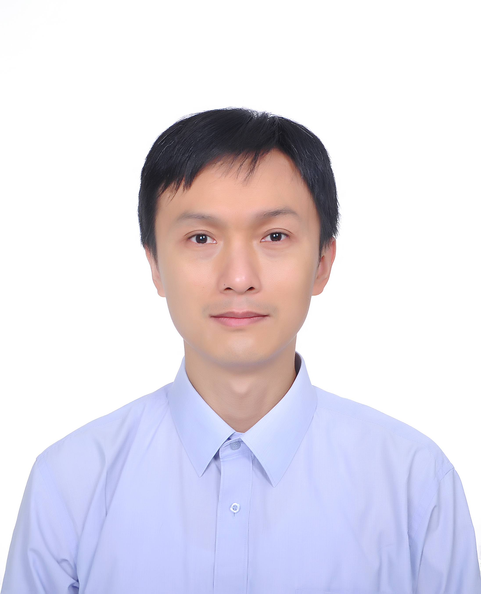

|  | Yingfei XiongAssistant Professor (Young talents Plan) Office: Room 1431, Science Building # 1, Peking University Pronunciation of my name: [i:ŋfei] (yingfei) [ʃiɔŋ] (xiong) |
| [ICSME18] | Ruru Yue, Zhe Gao, Na Meng, Yingfei Xiong, Xiaoyin Wang, David Morgenthaler. Automatic Clone Recommendation for Refactoring Based on the Present and the Past . ICSME'18: 34th IEEE International Conference on Software Maintenance and Evolution, September 2018. |
| [ISSTA18a] | Jiajun Jiang, Yingfei Xiong, Hongyu Zhang, Qing Gao, Xiangqun Chen. Shaping Program Repair Space with Existing Patches and Similar Code. ISSTA'18: International Symposium on Software Testing and Analysis, July 2018. [Paper][Tool:SimFix] |
| [ISSTA18b] | Yuhao Zhang, Yifan Chen, Shing-Chi Cheung, Yingfei Xiong, Lu Zhang. An Empirical Study on TensorFlow Program Bugs. ISSTA'18: International Symposium on Software Testing and Analysis, July 2018. [Paper] |
| [GI18] | Yingfei Xiong, Bo Wang, Guirong Fu, Linfei Zang. Learning to Synthesize. GI'18: Genetic Improvment Workshop, May 2018. [Paper] |
| [ICSE18a] | Yingfei Xiong, Xinyuan Liu#, Muhan Zeng#, Lu Zhang, Gang Huang. Identifying Patch Correctness in Test-Based Program Repair. ICSE'18: 40th International Conference on Software Engineering, Gothenburg, Sweden, May 2018. [Paper][Long Version][Slides] |
| [ICSE18b] | Shurui Zhou, Ştefan Stănciulescu, Olaf Leenich, Yingfei Xiong, Andrzej Wąsowski, Christian Kästner. Identifying Features in Forks. ICSE'18: 40th International Conference on Software Engineering, Gothenburg, Sweden, May 2018. [Paper] |
| [ISSTA17] | Bo Wang, Yingfei Xiong, Yangqingwei Shi, Lu Zhang, Dan Hao. Faster Mutation Analysis via Equivalence Modulo States. ISSTA'17: International Symposium on Software Testing and Analysis, Santa Barbara, CA, USA, pages 295-306, July 2017. [Paper][Slides][CoRR Version] ACM SIGSOFT Distinguished Paper Award |
| [ICSE17a] | Yingfei Xiong, Jie Wang, Runfa Yan, Jiachen Zhang, Shi Han, Gang Huang, Lu Zhang. Precise Condition Synthesis for Program Repair. ICSE'17: 39th International Conference on Software Engineering, Buenos Aires, Argentina, May 2017. [Paper][Slides][Tool][Long Version][SE-China][MSR Asia][MSR Blog][QbitAI][AlmostHuman] |
| [ICSE17b] | Junjie Chen, Yanwei Bai, Dan Hao#, Yingfei Xiong#, Hongyu Zhang#, Bing Xie. Learning to Prioritize Test Programs for Compiler Testing. ICSE'17: 39th International Conference on Software Engineering, Buenos Aires, Argentina, May 2017. [Paper] |
| [ESOP17] | Hao Tang, Di Wang, Yingfei Xiong, Lingming Zhang, Xiaoyin Wang, Lu Zhang. Conditional Dyck-CFL Reachability Analysis for Complete and Efficient Library Summarization. ESOP'17: 26th European Symposium on Programming, Uppsala, Sweden, April 2017. [Paper][Tool] |